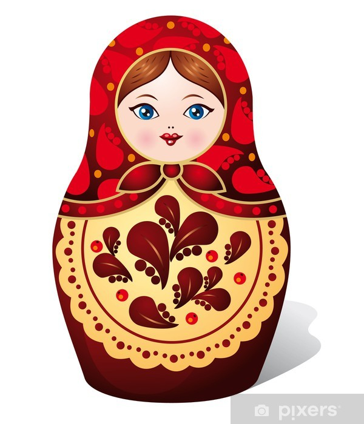

Les matriochkas, les poupées russes par excellence sont emblématiques de cet immense pays. Elles s'exportent depuis plus d'un siècle et sont devenues le souvenir à rapporter de son voyage.
La poupée en bois russe a été appelée matriochka, car dans la province russe d'avant la révolution, le prénom Matriona était l'un des plus répandus. Ce prénom, dérivé de « mère », était associé à l'archétype de la mère d'une grande famille : à ce jour, la matriochka est un symbole de la maternité et de la fertilité.
